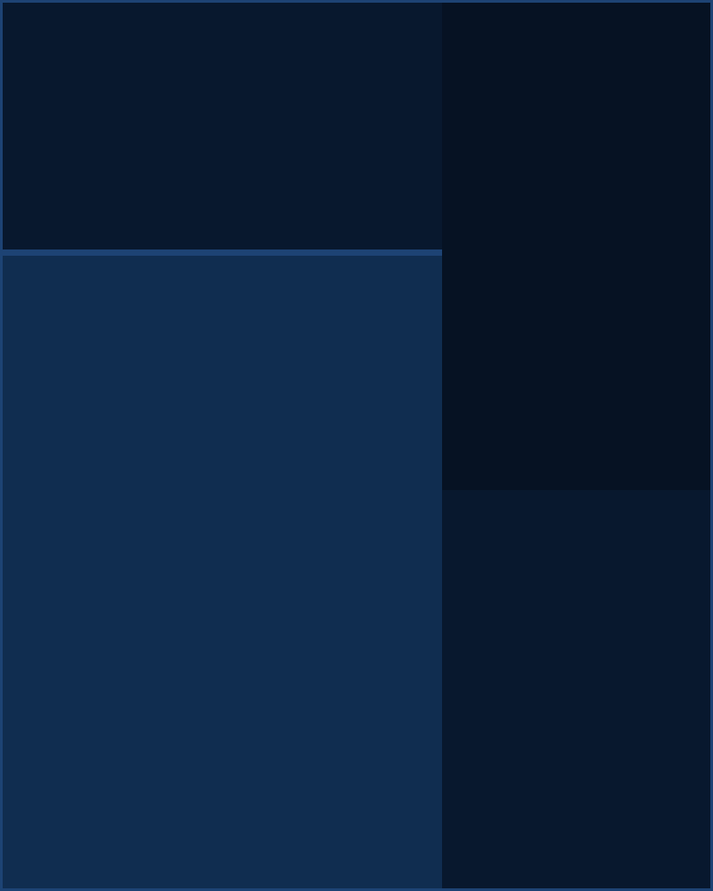

Telefonische B2C-sales · ISO 27001-gecertificeerd
Wij bouwen uw B2C-salesoperatie.
En wij voeren die uit.
KISS is een Nederlandse salesorganisatie voor telefonische verkoop aan consumenten, voor uitgevers, loterijen, goede doelen en abonnementsmerken. Wij werven, trainen en sturen de salesteams zelf. U krijgt een plan, en de organisatie die het waarmaakt.

KISS in cijfers
- werkplekken op de eigen vloer in Rijswijk
- 75
- commercieel getrainde salesagents
- meer dan 100
- DMCC-compliance, extern en wekelijks getoetst
- meer dan 98%
- gecertificeerd, sinds 2022
- ISO 27001
Opdrachtgevers waarvoor KISS werkt
Eén organisatie voor de hele salesoperatie
KISS werft, traint en stuurt telefonische salesteams voor Nederlandse consumentenorganisaties. Wij sturen elke dag op drie cijfers: effectiviteit, conversie en sales per uur. Zakt er één, dan weten wij waar het zit: in de data, het script, de bezetting of de coaching. Daar sturen wij bij. Wij komen met een plan en voeren het zelf uit.
-
Recruitment, selectie en training in eigen huis
Wij organiseren werving, selectie en opleiding zelf. Voor de basis van onze groei zijn wij niet afhankelijk van externe recruitmentpartijen. Capaciteit wordt daardoor gepland opgebouwd in plaats van afgewacht.
-
Sturen op performance, met grip op de operatie
Wij maken resultaten voorspelbaar en houden de operatie in de hand. Meer volume gaat bij ons niet ten koste van de kwaliteit van het gesprek.
-
Niet alleen meer sales. Betere sales.
Een sale is voor ons niet klaar zodra iemand ja zegt. Geeft u ons inzicht in uitval en opzeggingen, dan kijken wij ook naar wat er na de verkoop gebeurt. Zo sturen wij ook op hoe lang die klant blijft.
-
Proactieve communicatie en heldere rapportage
Wij signaleren problemen voordat u ze zelf ziet, benoemen commerciële kansen en onderbouwen wat wij voorstellen. U hoort van ons wat er werkelijk gebeurt, en wat wij daarvan verwachten.
KISS werkt breed in de Nederlandse consumentenmarkt, onder meer voor media en uitgevers, loterijen, goede doelen en abonnements- en membershipmerken.

Capaciteit die u kunt inplannen
Onze vloer biedt ruimte voor meerdere campagnes van 500+ salesuren per week naast elkaar. Een nieuwe operatie bouwen wij gefaseerd op: bij tijdige afstemming in circa drie maanden richting 500 salesuren per week. Dat is geen garantie. Het lukt wanneer recruitment, training en bezetting op tijd worden gepland en wij die planning samen met u maken.
Omdat wij zelf werven, selecteren en opleiden, hebben wij de opbouw van capaciteit in eigen hand.
Groter worden zonder de grip te verliezen
Schaal is pas iets waard als het gesprek overeind blijft. Daarom bewaken wij kwaliteit en compliance in de dagelijkse aansturing, en niet als controle achteraf. Uw klantbestanden en systeemtoegang vallen onder een gecertificeerd managementsysteem voor informatiebeveiliging.
- ISO 27001-gecertificeerd
- Kwaliteit en compliance geborgd in de dagelijkse aansturing
- Rapportage die onderbouwt wat er gebeurt en wat wij voorstellen
Wat een opdrachtgever ervaart
„KISS combineert commerciële performance met kwaliteit en schaalbaarheid. De communicatie is proactief, er wordt continu gestuurd op verbetering en afspraken worden nagekomen.”
Lees de DPG-case: in ongeveer drie maanden naar circa 500 salesuren per week
Werken bij KISS
Onze salesteams bestaan uit mensen die wij zelf werven en opleiden. Wil je leren verkopen en daar direct voor betaald krijgen, dan begint dat hier.
Bespreek uw salesvraag
KISS is op zijn best bij structurele campagnes met serieus volume. Herkent u een van deze situaties? Stel uw vraag. Na één kort gesprek weet u of het past.
- Er is extra B2C-salescapaciteit nodig
- Een bestaande salesoperatie moet opschalen
- Telefonische sales wordt uitbesteed
- Een commerciële campagne moet structureel beter presteren